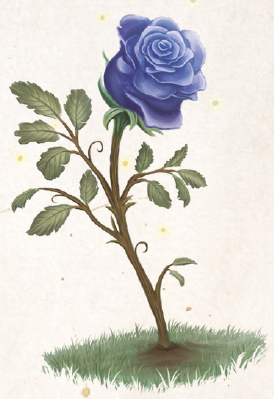

Es scheint, die Alveranie ähnelt dem Wesen ihrer Schöpferin sehr, denn es gibt kein Klima und keinen Standort in Aventurien, an dem sie nicht gedeiht. Selbst an unwirtlichen, ja lebensfeindlichen Orten, wie in der Gluthitze der Khom oder der Firunskälte der Grimmfrostöde, wächst sie. Auch ihr Aussehen spiegelt das Wesen Tsas wieder. Flüchtig betrachtet gleicht die stets allein wachsende und kaum über einen Spann große Alveranie einer Rose. Doch anders als diese ist sie stetem Wandel unterworfen und zeigt jeden Monat die Farbe der namensgebenden Gottheit. Beginnend mit einem praiosgelben Blütenkranz, über die kräftigen Farben von Rot, Blau und Orange des Spätsommers und Herbstes, hin zu stummem Schwarz, welkem Grüngelb und einer firunsweißen Knospe, bis sie sich über alle Farben des Regenbogens wieder erholt und in neuer Pracht silbergrau, blattgrün, feuerrot und tiefviolett erstrahlt. Allein in den Namenlosen Tagen ist die Alveranie unauffindbar. Es gilt als sicher, dass die nur selten vorkommende Alveranie an Orten gedeiht, an denen sich wundersame Ereignisse zutrugen oder noch zutragen werden. Sie gilt den meisten Wesen, vor allem aber Zwölfgöttergläubigen, als gutes Omen oder sogar als heilig.
Bislang konnte jedoch nur eine nutzbringende Wirkung, nämlich die als Heilmittel für die seltene magische Krankheit Guruk-Phaor nachgewiesen werden, was auch nicht weiter verwunderlich ist, denn die Alveranie ist schwer zu zerstören. Nur mit roher Gewalt ist es möglich, an Teile von ihr zu gelangen, und nur hartgesottene und verdorbene Wesen, die jeder Götterfurcht abhold sind, würden derlei überhaupt versuchen. Um zur Heilung der Krankheit an Blütenblätter zu gelangen, soll es nötig sein, die Alveranie zu einer freiwilligen Übergabe zu überzeugen, was nur Wesen mit reinem Herzen gelingen kann.
Verbreitung:
Landschaftstyp: alle
Regionen: sehr selten, aber überall, theoretisch selbst unter Wasser, in der Wüste und im Ewigen Eis
Suchschwierigkeit: -6
Bestimmungsschwierigkeit: -2
Anwendungen: 1/1/1/1/1/1
Wirkung:
Roh:
Berührung: keine
Einatmung: keine
Verzehr: Heilmittel gegen die magische Krankheit Guruk-Phaor, welche der Dämonenbaum Arkhobal verursacht
Verarbeitet: noch keine Rezepte bekannt
Preis: wird nicht gehandelt (aber sicherlich bis zu 100 Dukaten)
Rezepte:
noch keine bekannt
Alltagsarzneien und Volksbrauchtum: Vor Alveranien werden in manchen Regionen kleine Opfer dargebracht, um die Gunst des jeweiligen Monatsgottes zu erlangen.
Haltbarkeit:
Roh: siehe Haltbarmachung